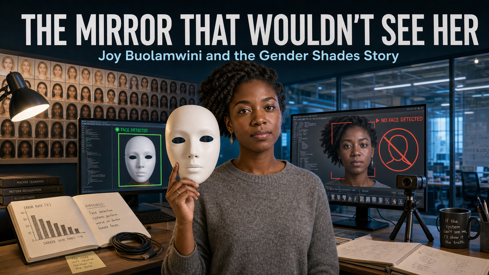

The Mirror That Wouldn't See Her

Cover Image Prompt
(This is the Cover Image. Do not include this label in the image.) Please generate a wide-landscape 16:9 cover image in a contemporary photorealistic-with-period-elements editorial illustration style capturing MIT Media Lab research culture circa 2018. Center the composition on Joy Buolamwini, a Black woman graduate researcher in her late twenties with dark brown skin and natural black hair worn in twists, wearing a simple heather-gray sweater, standing in a modern research lab and holding a plain white featureless theatrical mask beside her own bare face. On one monitor behind her, a green bounding box locks confidently onto the white mask; on another, a red "no face detected" icon hovers over a live feed of her unmasked face. Include a wall of small reference photos arranged in a gradient from light to dark skin tone (the Fitzpatrick scale), a webcam on a small tripod, an open lab notebook with a hand-drawn bar chart, a coiled USB cable, warm desk-lamp light mixing with cool blue monitor glow, and the Media Lab's glass-walled open architecture visible in the background. Render the title "THE MIRROR THAT WOULDN'T SEE HER" in clean modern geometric sans-serif lettering across the top, with the subtitle "Joy Buolamwini and the Gender Shades Story" beneath it. Color palette: cool cyan monitor glow, warm honest skin tones across the reference wall, charcoal and white lab surfaces, one alert-red accent. Emotional tone: quiet determination turning a personal glitch into a rigorous investigation. Generate the image immediately without asking clarifying questions.Narrative Prompt
This is a historically grounded educational case study for students in grades 9-12. It follows Joy Buolamwini, a graduate researcher at the MIT Media Lab in Cambridge, Massachusetts, from 2016 through 2018: her Aspire Mirror art installation, her discovery that commercial facial-detection software would not detect her own dark-skinned face but would detect a plain white mask, her systematic testing of commercial gender-classification systems, her partnership with AI researcher Timnit Gebru to build the Pilot Parliaments Benchmark, and the February 2018 public release of the Gender Shades study and its industry impact. Central themes: turning a personal anomaly into rigorous evidence, building fair test data instead of trusting convenient data, and documenting exactly what was tested so a claim of "high accuracy" can be checked rather than simply believed. Depict Joy Buolamwini consistently across panels as a Black woman with dark brown skin and natural black hair worn in twists, based on her well-known public appearance — never a caricature. Depict Timnit Gebru consistently as a Black woman with dark brown skin and natural black hair, often shown with glasses, based on her well-known public appearance. Specific lines of lab dialogue, whiteboard sketches, and the exact staging of any single scene are dramatized for narrative flow; the sequence of events — the Aspire Mirror project, the white-mask discovery, the multi-company benchmark testing, the Pilot Parliaments Benchmark, and the February 2018 release — is factually accurate and drawn from MIT News and the published Gender Shades study. All panels should share the same clean, modern, data-visualization-inflected research-lab art style so the story reads as one continuous world.Prologue – A Face the Camera Could Not Find
In 2016, a graduate student at the MIT Media Lab sat down to test an art installation she had built, one that used a camera to track a viewer's face. The software would not find hers. It found her friends' faces, it found photographs, but it kept failing on her — until she picked up a plain white mask and held it in front of her skin. This is the story of what Joy Buolamwini did next: she did not shrug off the glitch, she turned it into one of the most consequential technology audits of the decade.
Panel 1: The Aspire Mirror
Image Prompt
(This is Panel 01. Do not include the panel number in the image.) I am about to ask you to generate a series of images for a graphic novel. Please make the images have a consistent style and consistent characters. Do not ask any clarifying questions. Just generate the image immediately when asked. Please generate a wide-landscape 16:9 image in a contemporary photorealistic-with-period-elements research-lab style depicting panel 1 of 9. Show Joy Buolamwini, a Black woman graduate student in her late twenties with dark brown skin and natural black hair worn in twists, wearing a maroon MIT hoodie, sitting alone at a desk late at night in a Media Lab studio in Cambridge, Massachusetts, in 2016. In front of her, a small custom mirror rig with an embedded webcam and a projector is meant to overlay digital patterns onto her reflection, but the screen beside it shows only a gray blank outline where her face should be tracked. Include a half-built cardboard and acrylic mirror frame, a laptop showing scrolling code, a tangle of cables, a desk lamp as the only warm light source, a half-finished cup of tea, and her puzzled, focused expression as she leans toward the unresponsive screen. Color palette: deep midnight blue, warm lamp amber, and cool monitor gray. Emotional tone: quiet late-night puzzlement. Generate the image immediately without asking clarifying questions.Joy Buolamwini was building the Aspire Mirror, an art installation meant to project an inspiring image over a viewer's own reflection using face tracking. Late one night, testing it alone, she noticed the software simply refused to find her face. It found the walls, the chair, and objects on the desk, but her own features seemed invisible to the code.
Panel 2: The White Mask
Image Prompt
(This is Panel 02. Do not include the panel number in the image.) Please generate a wide-landscape 16:9 image in the same contemporary photorealistic-with-period-elements research-lab style depicting panel 2 of 9. Make Joy Buolamwini's appearance consistent with the prior panel: dark brown skin, natural black hair in twists, maroon MIT hoodie. Show her sitting at the same desk, now holding a plain white featureless theatrical mask up in front of her own face. On the monitor beside her, a bright green bounding box has snapped instantly onto the mask, with a small confidence readout reading "FACE DETECTED." Include her wide-eyed, startled expression visible around the edge of the mask, the earlier gray blank tracking screen still showing in a small picture-in-picture box for contrast, a sticky note where she has started jotting a question mark, the desk lamp's warm glow, and the mirror rig's projector now casting a faint pattern onto the mask's blank surface. Color palette: midnight blue, warm lamp amber, and bright detection green. Emotional tone: startled realization tipping into curiosity. Generate the image immediately without asking clarifying questions.On a hunch, she held a plain white mask up to her face — and the software locked on instantly, tracking the mask as confidently as it had ignored her skin. It was a strange, almost funny discovery, and a troubling one. Joy did not file it away as a personal inconvenience; she started asking whether the software had ever been tested on someone who looked like her.
Panel 3: A Question Becomes a Study
Image Prompt
(This is Panel 03. Do not include the panel number in the image.) Please generate a wide-landscape 16:9 image in the same contemporary photorealistic-with-period-elements research-lab style depicting panel 3 of 9. Make Joy Buolamwini's appearance consistent with prior panels: dark brown skin, natural black hair in twists, now wearing a simple heather-gray sweater in a daytime lab setting at MIT in 2017. Show her standing before three separate laptops, each running a different commercial gender-classification demo with a webcam feed and an "M / F" confidence output on screen. Include a printed stack of varied face photographs spread across the desk, a spreadsheet open on a fourth monitor beginning to fill with pass/fail rows, a bulletin board where she is pinning up printouts under handwritten labels, natural daylight through a large lab window, and her focused, methodical expression as she compares results across the three screens. Color palette: daylight white, soft gray, and accents of teal and amber on the screens. Emotional tone: methodical curiosity. Generate the image immediately without asking clarifying questions.Instead of dismissing the glitch, Joy turned it into a research question: how accurate were commercial gender-classification systems, really, and for whom? She began running several companies' publicly available demos side by side, feeding them a wide range of face photographs and logging every result. A pattern started to take shape, one result at a time.
Panel 4: The Pattern on the Wall
Image Prompt
(This is Panel 04. Do not include the panel number in the image.) Please generate a wide-landscape 16:9 image in the same contemporary photorealistic-with-period-elements research-lab style depicting panel 4 of 9. Make Joy Buolamwini's appearance consistent with prior panels: dark brown skin, natural black hair in twists, heather-gray sweater. Show her standing back from a large bulletin board covered in printed face photos sorted into a rough grid, with more red "misclassified" sticky notes clustered in the darker-skinned, female rows than anywhere else on the board. Include a marker in her hand, a half-drawn axis on a whiteboard suggesting a chart she has not finished yet, a laptop showing a lopsided early spreadsheet total, a cup of coffee gone cold, late-afternoon light turning orange through the window, and her thoughtful, slightly troubled expression as she studies the cluster of red notes. Color palette: warm late-afternoon amber, board-paper white, and warning red accents. Emotional tone: dawning concern. Generate the image immediately without asking clarifying questions.The red sticky notes were not scattered randomly across her board — they clustered in one corner, on the photos of women with darker skin. Joy recognized that a handful of demos and a shelf of face photos were not enough to prove a pattern this important. She needed a bigger, better, carefully built test.
Panel 5: Building the Benchmark
Image Prompt
(This is Panel 05. Do not include the panel number in the image.) Please generate a wide-landscape 16:9 image in the same contemporary photorealistic-with-period-elements research-lab style depicting panel 5 of 9. Show Joy Buolamwini and Timnit Gebru working together at a shared table in a Media Lab research space in 2017. Timnit Gebru is a Black woman researcher with dark brown skin, natural black hair, and glasses, wearing a navy blazer; Joy Buolamwini keeps her established look of dark brown skin, natural black hair in twists, and a heather-gray sweater. Between them, spread across the table, are official government photographs of national parliament members from several countries, being sorted into labeled trays marked with a six-step skin-tone scale and gender categories. Include two open laptops showing a growing structured spreadsheet, a printed copy of the Fitzpatrick skin-type scale as a color reference strip, a world map with pins on several countries, careful handwritten labels, and both women's collaborative, focused expressions as they cross-check an entry together. Color palette: cool research-blue, warm skin-tone reference strip, and neutral gray desk tones. Emotional tone: rigorous, purposeful teamwork. Generate the image immediately without asking clarifying questions.Joy partnered with AI researcher Timnit Gebru to solve the data problem at its root. Together they built the Pilot Parliaments Benchmark, a new set of face images drawn from the official photos of lawmakers in several countries chosen specifically to balance skin type and gender. For the first time, they had a test set that did not quietly favor one kind of face over another.
Panel 6: Running the Gender Shades Test
Image Prompt
(This is Panel 06. Do not include the panel number in the image.) Please generate a wide-landscape 16:9 image in the same contemporary photorealistic-with-period-elements research-lab style depicting panel 6 of 9. Show Joy Buolamwini and Timnit Gebru, appearances consistent with the prior panel, standing before a bank of three large monitors in a Media Lab testing room in early 2018. Each monitor runs a different commercial gender-classification system processing the same organized set of Pilot Parliaments Benchmark face photographs, with pass and fail counters ticking upward in real time beneath each feed. Include a shared results spreadsheet projected on a fourth screen, printed batches of the balanced face-photo set organized in trays by skin-type row, a clipboard with a running tally, cool blue-white lab lighting, and both researchers' alert, concentrated expressions as they compare the three counters side by side. Color palette: clinical blue-white, screen cyan, and neutral gray. Emotional tone: rigorous, high-stakes concentration. Generate the image immediately without asking clarifying questions.With a fair benchmark in hand, Joy and Timnit ran a systematic evaluation across three major commercial gender-classification systems, testing every face in the same disciplined way. This was not a hunch anymore — it was a controlled, repeatable experiment with real numbers attached to every result. The counters on the three screens told a story neither researcher was surprised to see, but one the world had not yet been shown.
Panel 7: The Gap on the Chart
Image Prompt
(This is Panel 07. Do not include the panel number in the image.) Please generate a wide-landscape 16:9 image in the same contemporary photorealistic-with-period-elements research-lab style depicting panel 7 of 9. Show Joy Buolamwini standing beside a large projected bar chart on a Media Lab wall screen in 2018, appearance consistent with prior panels. The chart shows two dramatically different bars: a short bar near the top labeled with a near-perfect accuracy percentage for lighter-skinned men, and a tall, stark error bar reaching over a third of the chart labeled with a high error rate for darker-skinned women. Include her hand pointing at the gap between the two bars, a printed draft of the research paper on the table below with the title "Gender Shades" visible on its cover page, a small stack of the balanced benchmark photos beside it, dim room lighting that makes the chart glow brighter, and her steady, resolved expression as she studies the disparity. Color palette: chart white background, alert red for the tall error bar, cool blue for the short bar, and dim charcoal room tones. Emotional tone: stark, sobering clarity. Generate the image immediately without asking clarifying questions.The chart made the disparity impossible to ignore. Lighter-skinned men were classified correctly almost every time, with error rates under one percent, while darker-skinned women were misclassified as often as one time in three. A number that specific and that large was not noise — it was evidence of a real design flaw, hiding behind confident-sounding accuracy claims.
Panel 8: The Story Goes Public
Image Prompt
(This is Panel 08. Do not include the panel number in the image.) Please generate a wide-landscape 16:9 image in the same contemporary photorealistic-with-period-elements research-lab style depicting panel 8 of 9. Show Joy Buolamwini, appearance consistent with prior panels, now wearing a simple navy blazer, speaking at a small press briefing podium at MIT in February 2018 with the Gender Shades bar chart projected on a large screen behind her. Include a row of journalists with notebooks and recorders, a laptop open to a news website headline about bias in facial recognition, a second screen showing an abstract corporate statement document with a pledge to improve accuracy, a table with printed copies of the study, soft professional stage lighting, and her calm, confident posture as she gestures toward the chart. Color palette: professional navy, presentation-screen white, chart red and blue, and warm stage amber. Emotional tone: public accountability and quiet vindication. Generate the image immediately without asking clarifying questions.When the Gender Shades study went public in February 2018, it made headlines far beyond the research community. Major technology companies whose systems had been tested, including IBM and Microsoft, publicly acknowledged the gap and committed to improving their facial-analysis accuracy. A finding that started with one graduate student and a plain white mask had reached boardrooms and newsrooms around the world.
Panel 9: Building the Algorithmic Justice League
Image Prompt
(This is Panel 09. Do not include the panel number in the image.) Please generate a wide-landscape 16:9 image in the same contemporary photorealistic-with-period-elements research-lab style depicting panel 9 of 9. Show Joy Buolamwini, appearance consistent with prior panels, standing in front of a diverse group of students and young researchers in a bright community workshop space, a few years after the Gender Shades release. A banner behind her reads "Algorithmic Justice League" above a simple line-art logo. Include laptops on tables running face-testing demos on a range of diverse test photos, a wall poster listing "Test who you did not picture" and "Document what you tested," a young Black girl in the audience raising her hand with an excited expression, printed copies of the Gender Shades findings on a resource table, warm daylight through large windows, and Joy's open, encouraging expression as she gestures toward the audience. Color palette: bright optimistic teal, warm daylight gold, and clean white. Emotional tone: hopeful, energizing, forward-looking. Generate the image immediately without asking clarifying questions.Joy did not stop at one study. She founded the Algorithmic Justice League to keep pressure on companies building face-based AI and to teach the next generation to test their own work honestly. Her white-mask discovery grew into a career built on one clear principle: a system's accuracy claim means nothing until someone checks it against the people it was never tested on.
Epilogue – Evidence Over Assumption
Joy Buolamwini's story is not really about one broken camera. It is about what happens when someone refuses to accept "it probably works fine" as an answer and instead builds the fair test that proves or disproves it. The Pilot Parliaments Benchmark and the Gender Shades study turned a personal frustration into a documented, reproducible case that companies could not wave away — and it changed how the whole field thinks about testing AI.
| Challenge | How Buolamwini Responded | Lesson for Today |
|---|---|---|
| Facial-detection software failed to see her own face | Investigated the anomaly systematically instead of dismissing it as a personal glitch | A small, personal error can be evidence of a design flaw that affects many people |
| Existing test data skewed toward lighter-skinned, male faces | Built the Pilot Parliaments Benchmark, a dataset balanced across skin type and gender | A test is only as fair as the data used to run it |
| Companies made confident accuracy claims without showing how they were measured | Ran a transparent, documented, reproducible audit across multiple commercial systems | Publish what you tested, how you tested it, and who you tested it on |
| A single study could not force lasting change on its own | Founded the Algorithmic Justice League to sustain public pressure and teach others to audit AI | Exposing a problem is the first step; sustained advocacy turns evidence into reform |
Call to Action
Before you call any robot face "done," ask Joy Buolamwini's question: tested on whom? A face that reads clearly to you and your friends might fail completely for someone you never pictured while designing it. Test your expressions on people who do not look like you, write down exactly who and how you tested, and treat that documentation as part of the design — not an afterthought.
"Who codes matters, how we code matters, and why we code matters." —Joy Buolamwini, TEDxBeaconStreet
"To fail on one in three, in a commercial system, on something that's been reduced to a binary classification task, you have to ask, would that have been permitted if those failure rates were in a different subgroup?" —Joy Buolamwini, MIT News, February 2018
"If you have a face, you have a place in the conversation about AI." —Joy Buolamwini, NPR interview, 2023
References
- Wikipedia: Joy Buolamwini - Biography of the computer scientist and founder of the Algorithmic Justice League
- Wikipedia: Timnit Gebru - Biography of the AI researcher and co-author of the Gender Shades study
- Wikipedia: Algorithmic bias - Background on how automated systems can produce systematically unfair outcomes
- MIT News: Study finds gender and skin-type bias in commercial artificial-intelligence systems - The original February 2018 MIT report on the Gender Shades findings
- MIT Media Lab: Gender Shades project overview - The project page describing the Pilot Parliaments Benchmark and study methodology